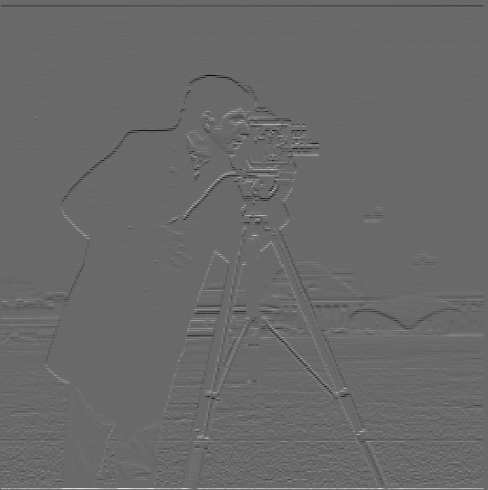
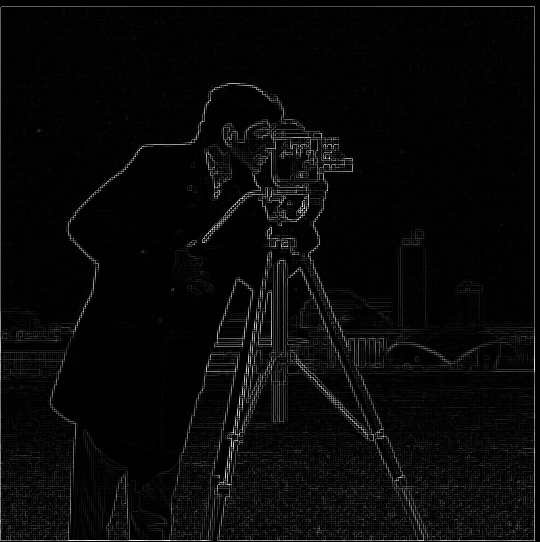
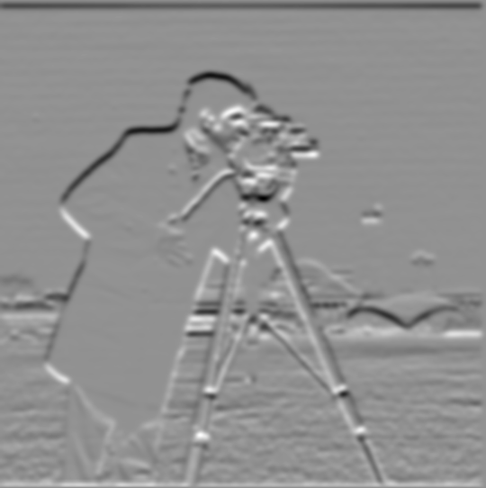
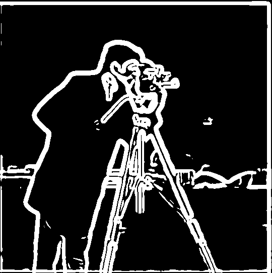

Original
Sharpened
Original
Sharpened

Original

Blurred

Re-sharpened
| $D_x$ |
 $D_y$ |
|  Gradient magnitude |
Binarized |
We first blur the image with a Gaussian kernel, then perform finite difference operator.
| $D_x$ |
 $D_y$ |
| Gradient magnitude |
Binarized |
We see that the edges are a lot clearer now, because by removing high frequencies we lessen the likelihood of mistaking small details as edges.
| $D_x$ |
$D_y$ |
| Gradient magnitude |
 Binarized |
We can see the result is the same as doing it with two.
Original |
Sharpened |
|
| Original |
Sharpened |
|
| Original |
Blurred |
Re-sharpened |